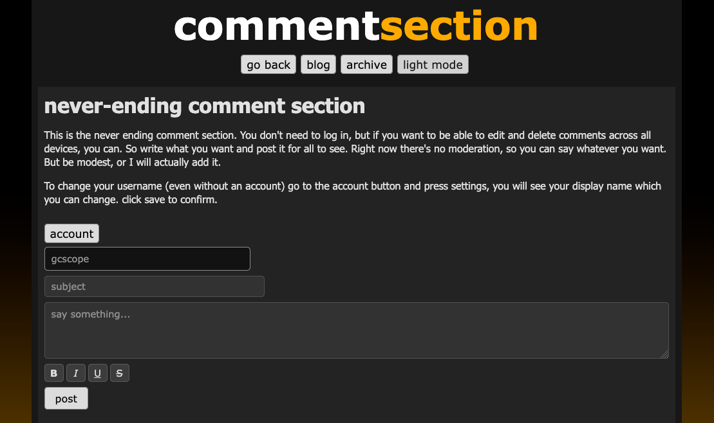

other stuff completed
07/17/2026
Two days ago I added the other stuff page, and the never-ending comment section. Finally, all three buttons are complete. The other stuff page will be a list of other things to do here on the site other than read my blogs. Theres only the comment section on there right now, but I will eventually add more to it. I won't add things as frequent as the blogs, but I'm thinking of adding stuff maybe once or twice a month (biweekly). As for the blogs, I'm gonna write something twice a week, because blogs are easy as shit to make.
NEVER-ENDING COMMENT SECTION
I made the never-ending comment section in 2 days using Claude. You can format text (bold, italic, etc.) edit and delete your comments (even if you're not logged in), reply to comments, and make an account with your email. When you make an account, you can edit and delete your comments, as well as keep your name, across all devices.
{kind=link}

It's pretty cool, you should give it a try. It would be cool if evenutally there's so many comments that you can just scroll endlessly. But it'll be a while before that happens.
Since the other stuff is now completed, this will probably be the last blog I talk about developing my site for a while. I want to write more blogs about my life and what is going on around me. I'm gonna write a boxing autobio (Yes, I'm an amateur boxer) because I haven't been around long enough to (and haven't really done much outside of boxing) to make a full autobio. Once I'm eighteen, I want to do more things, because I'll have the freedom to go anywhere and not have my parents (my mom) make a big deal out of it (btw I know things cost money).
rantstuff.com
I bought a web domain called rantstuff.com last week, originally, when I started learning HTML, I wanted to make a website/forum where you rant about things. I wanted the use the name rantstuff.com because it was catchy, and it was straight to the point: you rant about stuff. I plan on setting up rantstuff.com completely different than how I set up a1a, instead of using a hosting service to host the site (a1a.ca uses github pages), I want to set up a server and self-host using Apache. Worst case, If the site is too slow or too buggy, I can always switch to a hosting service. Thinking about it now, rantstuff.com should be the next thing I make for the other stuff page. It wouldn't take as long as a1a did becuase Claude can help me with the programming. It can also help me set up the server. I'll plan it out, design it with photoshop, and have Claude program most of it (Mainly the javascript).
In conclusion, the other stuff is completed. Now it is time to work on rantstuff.com
PSALM 27:1